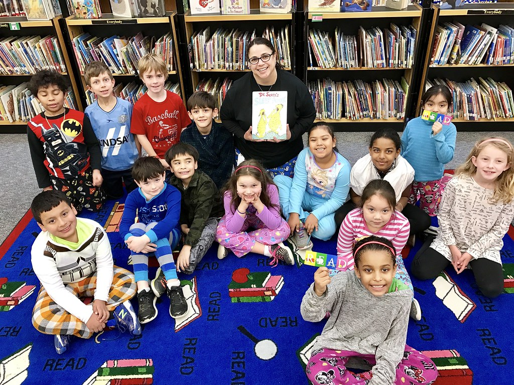
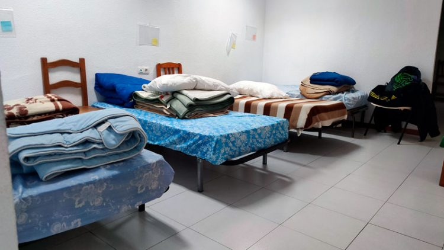
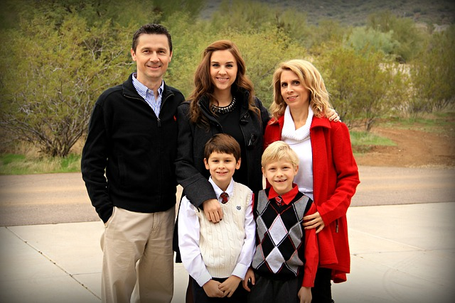

20 de Noviembre... porque este, no es un día cualquiera...
¿Qué es el día del pijama?

Este día, el 20 de noviembre, se lleva a cabo un acto con el objetivo de dar visibilidad a los
niños y jóvenes
que viven en centros de acogida.
La idea es acudir al centro escolar con el pijama.
Es un día de celebración, donde lectura de cuentos, proyecciones audiovisuales, tareas, juegos y demás
actividades armonizan, amenizan y generan sensación de protección y arropo a los niños y jóvenes.
Se trata de concienciar sobre el derecho de todos los menores a vivir en un hogar junto con una
familia. Lee más sobre este día...
Centros de acogida

Lugares que proporcionan entidades públicas para los menores con problemas familiares, tales como
padres
incapacitados por alcohol, drogas...
Debemos ser conscientes que, la infancia ni la adolescencia de ningún niño ni joven debería transcurrir en un
centro de acogida.
Es vital coger consciencia de que estos centros existen, están repartidos por toda la geografía y deben ser
vaciados con la ayuda de todos y todas.
Comparte, difunde, infórmate y trata de ayudar en la medida de lo posible, quizás no puedas acoger, pero
seguro
que puedes colaborar.
Hay que tener también muy presente que la convivencia en estos centros no siempre es buena y puede provocarles
problemas adicionales. Es importante que los conozcas...
Acogimiento familiar

Es una medida de protección por la que, la guarda de una persona menor de edad se ejerce por una familia o
persona que asume las obligaciones de velar por ella, alimentarla, educarla...
Existen muchos tipos de familias, y muchas de esas familias, pueden ser un gran referente y apoyo a aquellos
niños y jóvenes que, por cualquiera que sea la causa, carecen de ese núcleo estructurado y que pueda llevarles a
un buen futuro personal, social y académico entre otros.
Imagina poder darle a un menor un futuro, sí, eso, un futuro, debe ser aliciente suficiente para
que sea de gran interés el conocer cómo convertirte en una famlia de acogida.
El acogimiento familiar es de vital importancia y requiere de familias dispuestas a ello, es fundamental
saberlo todo, así que... sigue leyendo...